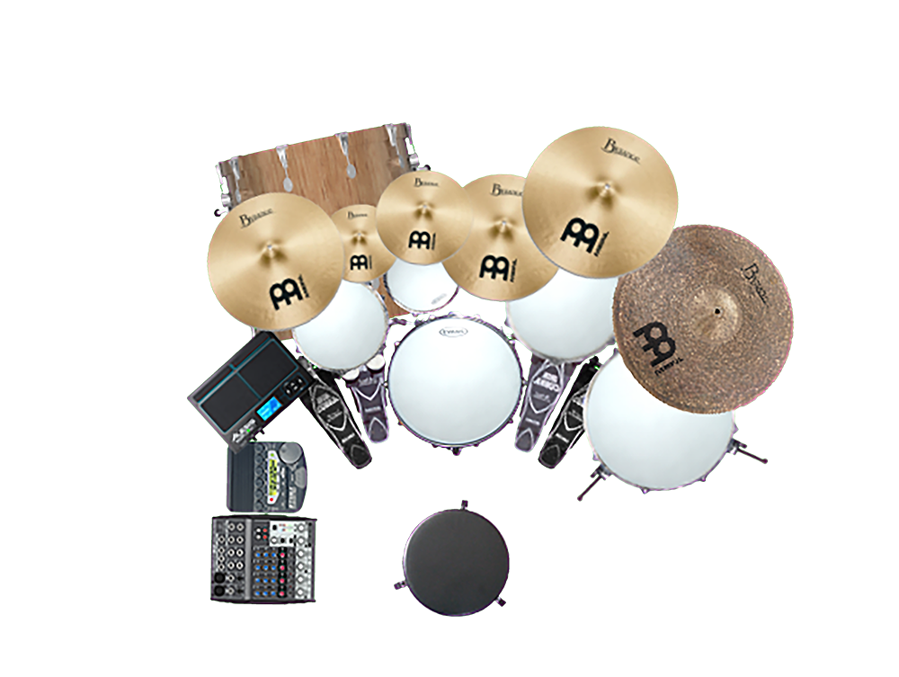

Walnut shells:
16 x 20" Basedrum
5 x 14" Snare
4.5x 10" Tom-Tom
3 x 8" Tom-Tom
9 x 13" Tom-Tom
13 x 16" Stand-Tom
Meinl Byzance Cymbals:
15" Thin Crash
8" Splash
10" Splash
14" Cable-Hi-Hat
17" Thin Crash
21" Dark Ride
Electronics:
Alesis Sample Pad 4 (4 Pads + 1 Kick)
Tama RW200 (Click)
Behringer Xenyx 802 (Monitoring)
Tascam DP-24 SD (8-Track Recorder)